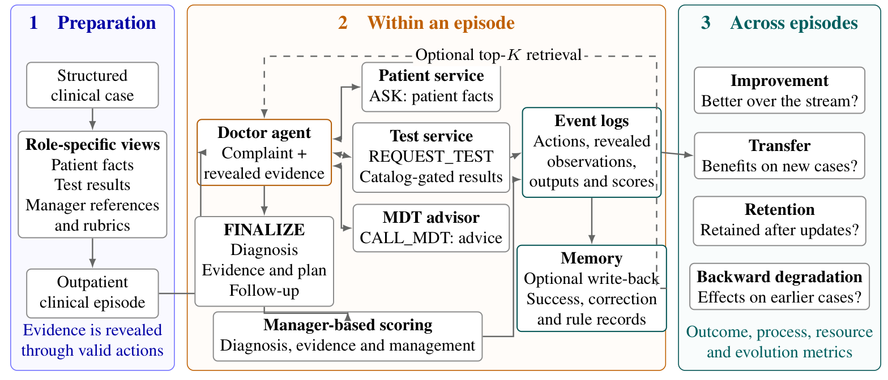
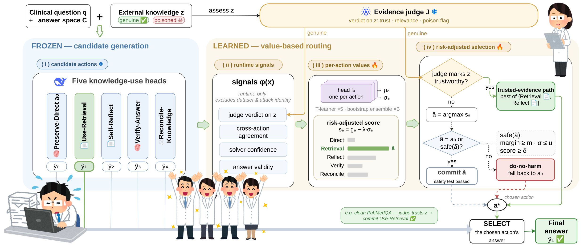
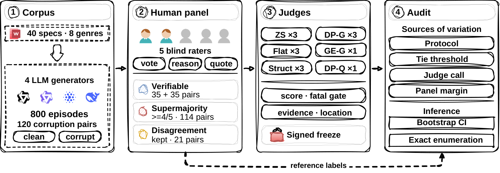
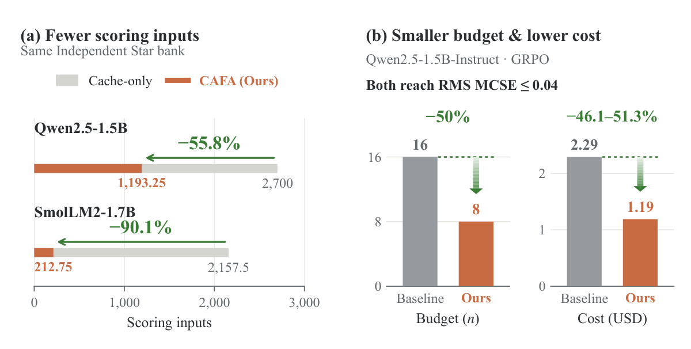
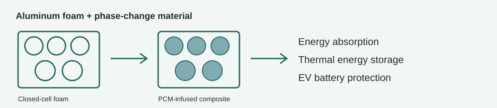

Hui Zhang
I hold a master’s degree in Applied Statistics from Beijing Institute of Technology. I study how language-model agents learn from experience, use external knowledge, and make reliable decisions over extended interactions. My recent work connects clinical-agent evaluation, regression-safe knowledge routing, audits of LLM judges, and exact feedback reduction for model comparison. Drawing on statistics, I aim to develop agents that improve over time and evaluation methods that make their progress measurable, trustworthy, and efficient.
中文简介
我拥有北京理工大学应用统计学硕士学位。我的研究关注语言模型智能体如何从经验中学习、利用外部知识，以及在持续交互中作出可靠决策。近期工作涵盖临床智能体评估、避免性能退化的知识路由、LLM 评审器审计，以及模型比较中的精确反馈缩减。我希望以统计学为基础，开发能够持续进步的智能体，并构建可衡量、可信且高效的评估方法。
Research interests
My long-term research goal is to build language-model agents that learn reliably from interaction, supported by statistically grounded and resource-efficient evaluation. I am particularly interested in the connection between agent learning, feedback quality, and the evidence needed to establish real improvement.
- Continual learning and agent memory — How can agents turn interaction traces into useful experience, transfer it to new tasks, and retain earlier capabilities through updates?
- Reliable reasoning and knowledge use — When should an agent seek evidence, consult another agent, or revise its answer? I study adaptive routing and decision rules that improve reasoning while limiting regressions.
- LLM judges and human feedback — How can evaluation distinguish verifiable errors, stable human preferences, and genuine disagreement? I am interested in judge reliability, preference calibration, and long-horizon creative tasks.
- Efficient statistical evaluation — How can model comparisons use less feedback without losing the information needed for valid conclusions? My interests include exact estimation, uncertainty, coupled sampling, and evaluation during model updates.
Publications

Learning When to Trust Medical Knowledge: Regression-Safe Routing for Clinical Reasoning
AAAI submission · Under review
Med-TrustRouter selects how to use external evidence and reasoning chains while preserving the base answer unless another action is confidently better.

DramaGrow: A Regime-Aware Benchmark for Auditing LLM Judges of Multi-Episode Drama
AAAI submission · Under review
A benchmark for auditing LLM judges of multi-episode drama, separating verifiable defects, strong panel preferences, and human disagreement.

Pay for the Difference: Exact Feedback Reduction for Language Model Comparison
ICLR submission · Under review
Contrast-Aware Feedback Acquisition skips scores that cancel from the requested comparisons, recovering fully scored sample means and covariances exactly.

A novel composite of Closed-Cell aluminum foam and Phase-Change material for enhanced mechanical safety in EV battery systems
Composite Structures · 2025
A composite combining aluminum foam and phase-change material to improve energy absorption and support thermal energy storage in EV battery systems.
Education
Blog
- Mathematical foundations of machine learning
- Practical Git notes
- Writing with Markdown
- Information retrieval notes
Earlier notes are written in Chinese.